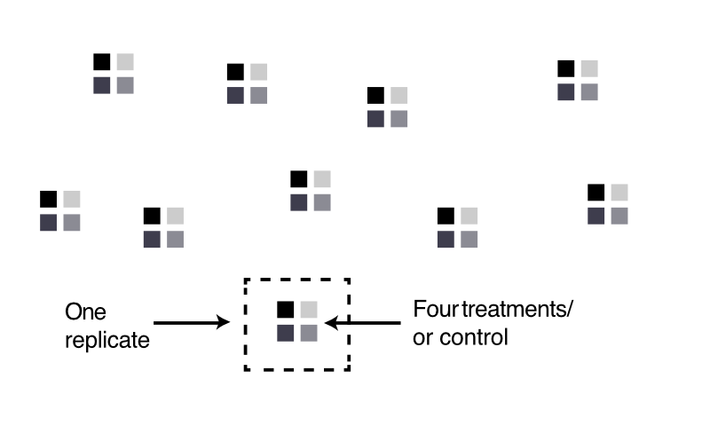

library(designr)
design1 <-
fixed.factor("Age", levels=c("young", "old")) +
fixed.factor("Material", levels=c("word", "image"))
design1
## Factor design with 2 factor(s):
## - Fixed factor `Age` with 2 level(s) (young, old) and 1 replication(s)
## - Fixed factor `Material` with 2 level(s) (word, image) and 1 replication(s)
##
## Design matrix with 4 planned observations:
## # A tibble: 4 × 2
## Age Material
## <fct> <fct>
## 1 young word
## 2 old word
## 3 young image
## 4 old image12 Design of experiments
12.1 Question
In the beginning, there is the question. Let assume for simplicity that we want to know if y depends on x
\[ y \sim x \]
To answer this question, we plan to vary x and then take measurements of y.
12.2 Quality of measurements
The first question to ask in this context is if my measurements are reliable. In particular, I may want to know if
The consideration of these two questions is often referred to as construct validity.
- Does my measurement process really target the quantity that I want to measure, or is it only a proxy?
- What is the expected statistical (stochastic) error in my measurements, and what is the possible systematic error in my measurements
The first item may seem a bit odd, because one would think that we know what we measure. However, in many cases in ecological statistics and beyond, we do not measure directly the variable that we are interested in, but rather a proxy. So, for example, we want temperature on the plot, and we use temperature from a weather station 5 km away. Or, we want to look at functional diversity, but how can we exactly express this in terms of variables that we measure in the field.
The second questions relates to considering how much two measurements would differ if we do them repeatedly (stochastic), and how much measurements could be off systematically (e.g. because a method or instrument is systematically wrong, or because humans show particular biases). The values can often be read of instruments etc.
When designing your experiments, try to find the best solution to minimize both problems before going on in the process.
12.3 Selection of treatments levels for the independent (predictor) variables
In an experimental study, we usually vary predictor variables systematically for a particular entity, e.g. a plant, a pot or a plot. This entity is called the experimental unit. Also observational studies have experimental units (the entities for which measurements are taken), but it usually not possible to completely control the variables. However, one usually has the option to make particular selections. Also in observational studies, it is key to ensure sufficient sufficient variation of the predictor variables across the experimental units to allow a meaningful statistical analysis.
The experimental unit is the entity that can be assigned a particular variable combination (e.g. treatment or control). Example: an individual plant, or a pot.
When deciding on which treatments to describe, here a few things that you want to consider:
12.3.1 Vary all variables independently
A common problem in practice is that we have two variables, but their values change in a correlated way. Imagine we test for the presence of a species, but we have only warm dry and cold wet sites. We say the two variables a collinear. In this case we don’t know whether any observed effect is due to temperature or water availability. The bottom-line: if you want to separate two effects, the correlation between them must not be perfect - ideally, it would be zero, or failing that, as low as possible.
In an experiment, you should try to avoid such correlations by all means, i.e. set your treatments such that variables are not correlated!
12.3.2 Interactions
To be able to detect interactions between variables, it’s not enough to vary all, you also need to have certain combinations. The buzzword here is (fractional) factorial designs. Basically, if you have two predictor variables, and you want an interaction, you need at least 4 treatments for the two variables: low low, low high, high low and high high. This is called a full factorial design.
For more complicated situations, R or other software packages can help you to find appropriate statistical designs
12.3.3 Nonlinear effects
The connection of two points is a line. If you want to see whether the response to a variable is nonlinear, you therefore need more than two values of each variable. Common recommendation for a categorical treatment (with the goal of later running an ANOVA) is to take 4, because with 3 you often do not get a good idea about the shape. An alternative is to treat the variable as continuous, in which case you can just spread your points evenly across the range of the predictor.
12.4 What do do about confounding variables
If we think there is a factor that could be confounding, we basically have three options
- Best: control the value of these factors. Either fix the value (preferred if we are not interested in this factor), else vary the value in a controlled way (see below).
- Second best: randomize and measure them
- Third best: only randomize or only measure them
Randomization means that we try to ensure that the confounding factor is not systematically correlated with the variable of interest (but can still cause problems with interactions and nonlinear relationships).
Measuring allows us to account for the effect in a statistical analysis, but cost power (see below) and, and we can’t measure everything.
Variables that we include but that are not interesting to us are often called nuisance variables.

12.5 How many replicates?
We said before that the significance level \(\alpha\) is the probability of finding false positives. This is called the type I error. There is another error we can make: failing to find significance for a true effect. This is called the type II error, and the probability of finding an effect is called power.
Power is the probability of finding significance for an effect if it’s there.
For standard statistical methods, power can be calculated. You have to look it up for your particular method, but in general assume that
- Power goes up with increasing effect size
- Power goes down with increasing variability in the response
This means that, unlike for the type I error which is fixed, calculation of power requires knowledge about the expected effect and the variability. This sounds really bad, but in most cases you can estimate from previous experience how much variation there will be, and in most cases you also know how big the effect has to be at least to be interesting. Based on that, you can then calculate how many samples you need.
12.6 Check List experimental design
For each experiment, ask the following questions:
- Clear, logically consistent question? Write it down. Read chapter about valid / good scientific questions in the lecture notes
- Make sure you have read and considered all the issues of validity discussed in the main lecture notes. Go through the checklist validity at the end of the section in the main lecture notes.
- Draft a design
- Vary the variables that you need to measure to answer your questions. Decide if you are interested in main linear effects, or also nonlinear effects or interactions.
- Write down potential confounding variables. Decide if they are better controlled, randomized or measured? Are you sure they are confounding (correlated to response AND one or several of the predictors)
- Define the statistical hypothesis to be tested, including confounders. Write it down, as in \(height \sim age + soil * precipitation + precipitation^2\).
- Choose how the variables will be varied in the experiment. Consider using software for this, e.g. for fractional factorial designs (in observational studies, you sometimes have limited control, but you can maybe estimate what variable combinations you will observe).
- Blocking - try to group different treatments / most different variable combinations together. The aim is that unknown / unmeasured variables are not correlated with your experimental variables (see pseudo-replication)
- Decide on the number of replicates. Make a guess for effect size and variability of the data, and either calculate or guess the number of replicates necessary to get sufficient power. What sufficient means depends on the field, but I would say you want to have a good chance to see an effect if it’s there, so a power of \(>80\%\) would be good.
- Check design
- Play through the processes of collecting your data: simulate it in your mind or in R, make up some data, write it down. Everything seems OK?
- Play through the process of analyzing your data. Which method? Can you answer your question? Do a power analysis!
- Revise if necessary